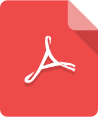

-

-

- 
| Этапы | Рекомендуется | Не рекомендуется |
|---|---|---|
| Bыяснить ожидания работодателей | — Определить сферы, в которых вы профи | — Пытаться уметь все |
| Посмотреть образцы | — Не забыть, что краткость — сестра таланта | — Писать много букв: опыта и навыков от этого не прибавится, и интервьюер устанет читать |
| Подобрать подходящий образец | — Уделить внимание отступам и пунктуации | — Разукрашивать резюме разными цветами
— Размещать свое фото — Использовать более двух типов шрифтов |
| Прослушать подкасты | — Быть краткими и содержательными
— Следить за стилистикой, особенно в перечислениях она должна быть сообразной — Рассказать о своих достижениях, имеющих отношение к делу |
— Рассказывать о достижениях, которые не имеют подтверждений
— Упоминать факты, не относящиеся к делу |
| Изучите лексику | ||
| Сгенерировать прототип резюме | — Тщательно изучить условия использования сервиса: если не указано явно, что услуга бесплатна и не требует отправки платного СМС, покиньте ресурс
— Уместить текст на одной странице, максимум — на двух |
— Пользоваться псевдо-сервисами на бесплатных хостингах и блоговых площадках
— Пользоваться платными генераторами, поскольку досточно бесплатных — Предоставлять свой телефон или электронную почту для получения готового резюме |
| Составить сопроводительное письмо | — Обосновать интерес к позиции, на которую претендуете | — Располагать текст на нескольких страницах
— Невнятно указывать позицию, на которую претендуете |
| Прочитать про мошенников | — Использовать кадровые агентства в последнюю очередь | — Отправлять резюме, не изучив в сети типичные случаи мошенничества |
| Направить готовое CV | — Отправить резюме непосредственно работодателю при наличии его объявления о соответствующей открытой вакансии
— Отправить резюме в нужное время |
— Платить кому-либо за что-либо
— Отправлять резюме виртуальным кадровым сервисам, у которых нет реального офиса, в который можно прийти и посмотреть на этих деятелей — Отправлять резюме в кадровые агентства или работодателю без их запроса — Отправлять без сопроводительного письма — Отправлять CV всем подряд |
| Изучить вопросы работодателей |